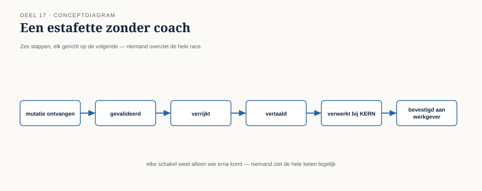
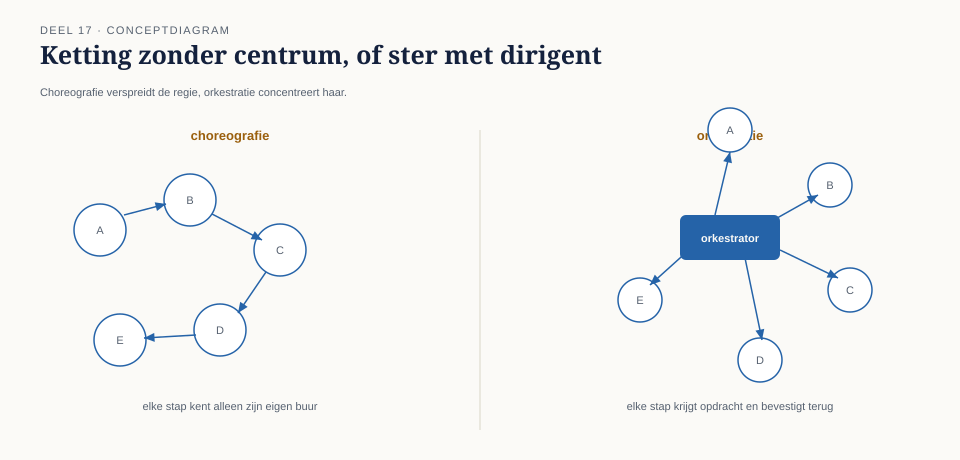

Cursus Enterprise Integration Patterns · Niveau 2 (Het landschap) · Deel 17 van 30
Orkestratie versus choreografie
Een deelnemersproces bij Meridiaan — het starten van een pensioenuitkering na pensionering — bleek, bij nader onderzoek naar aanleiding van een klacht, uit zes stappen te bestaan die over vijf verschillende systemen waren verspreid: KERN registreerde de pensioendatum, de externe administrateur berekende het uitkeringsbedrag, de risicomanagementafdeling voerde een fraudecontrole uit, de uitkeringsadministratie startte de daadwerkelijke betaling, het Werkgeversportaal informeerde de voormalige werkgever, en de communicatieafdeling verstuurde een bevestigingsbrief.
7secties
2figuren
12controlevragen
1kernzinnen
Niveau 2: ① Integratiearchitectuurstijlen: punt-tot-punt vs. broker vs. event backbone → ② Routing-patroonfamilie diepgaand: dynamic router, recipient list, splitter/aggregator → ③ Transformatie diepgaand: content enricher, content filter, claim check → ④ Endpoint-patronen: messaging gateway, messaging mapper, service activator → ⑤ Systeembeheerpatronen: control bus, wire tap, detour, message history, smart proxy → ⑥ Messaging-infrastructuur: broker-architecturen en exchange/queue-modellen → ⑦ Orkestratie versus choreografie (hier) → ⑧ Distributed transactions in async context: saga's en compenserende transacties → ⑨ Outbox-pattern en transactional messaging → ⑩ Contractbeheer voor asynchrone koppelingen → ⑪ Observability in ketens: distributed tracing, correlation, message history in productie → ⑫ Capstone: verdediging vanuit rollen — integratieontwerp voor het Mutatieplatform
17.0 Wie besliste dat de uitkering mocht doorgaan?
Sectie 1 van 7
Een deelnemersproces bij Meridiaan — het starten van een pensioenuitkering na pensionering — bleek, bij nader onderzoek naar aanleiding van een klacht, uit zes stappen te bestaan die over vijf verschillende systemen waren verspreid: KERN registreerde de pensioendatum, de externe administrateur berekende het uitkeringsbedrag, de risicomanagementafdeling voerde een fraudecontrole uit, de uitkeringsadministratie startte de daadwerkelijke betaling, het Werkgeversportaal informeerde de voormalige werkgever, en de communicatieafdeling verstuurde een bevestigingsbrief.
Elke stap reageerde, via het mutatie-gebeurd-kanaal (deel 2, deel 6), op de gebeurtenis die de vorige stap produceerde: KERN publiceerde "pensioendatum geregistreerd", de administrateur luisterde daarop en publiceerde na berekening "uitkeringsbedrag vastgesteld", risicomanagement luisterde daarop, enzovoort — een keten van reacties op reacties, zonder één component die het geheel overzag.
Toen de klacht binnenkwam — een deelnemer wiens uitkering vier weken te laat startte — kon niemand in één oogopslag zien waar in de keten van zes stappen de vertraging zat, wélke stap op wélke andere stap wachtte, of wat er zou moeten gebeuren als een stap werd overgeslagen. Elk team kende alleen zijn eigen stap; niemand kende het geheel. Dit is een ander probleem dan deel 15 behandelde: niet "waar is dit specifieke bericht", maar "wie is verantwoordelijk voor het feit dat dit hele proces correct doorloopt".

Figuur 17-1 — Zes stappen in een keten, elk met een pijl naar de volgende, zonder één centraal punt dat de keten als geheel overziet — vergelijk met een estafette zonder coach die het geheel volgt.
02
17.1 Choreografie: wat er al was, zonder dat iemand het zo noemde
Sectie 2 van 7
Wat er bij Meridiaan al bestond, is een architectuurstijl die choreografie heet: elke component reageert zelfstandig op gebeurtenissen van andere componenten, zonder een centrale regisseur. Elke "danser" (component) kent zijn eigen bewegingen en reageert op signalen van anderen, maar niemand staat aan de zijlijn met het complete script.
Dit is, zoals de naam al suggereert, direct verwant aan de publish-subscribe-architectuur uit deel 2 en 6, en aan de event backbone uit deel 11 — choreografie is in essentie wat er ontstaat wanneer je meerdere event-gedreven stappen simpelweg na elkaar laat reageren, zonder een aanvullende laag toe te voegen. De sterke punten van choreografie zijn precies de sterke punten van publish-subscribe: lage koppeling (elke component hoeft alleen te weten op welke gebeurtenissen hij reageert, niet wie er nog meer in de keten zit), en eenvoudige uitbreidbaarheid (een nieuwe stap toevoegen betekent alleen: abonneer op het juiste event, publiceer het volgende — geen bestaande componenten hoeven aangepast te worden).
Het probleem dat 17.0 blootlegde, is echter ook inherent aan choreografie: er is geen enkele plek waar het geheel van het proces expliciet is vastgelegd. De volgorde van de zes stappen bestaat alleen impliciet, verspreid over zes losse abonnementsconfiguraties bij vijf teams — precies zoals de verborgen volgorde-aanname uit deel 6 (audit-trail die impliciet op het Nabestaandenloket wachtte) een risico bleek te zijn wanneer hij nergens was vastgelegd. Choreografie schaalt dit risico op: bij twee stappen is een impliciete afhankelijkheid nog te overzien; bij zes stappen, verspreid over vijf teams, is dat niet meer het geval.
Kernzin 18 van de cursus: choreografie maakt elke individuele stap eenvoudig, ten koste van het overzicht over het geheel — de prijs wordt onzichtbaar totdat iemand moet uitleggen waarom het geheel niet werkt.
Controlevraag — Opdracht 17.1 — Waarom niveau 1 en deel 15 dit niet oplossen
Uit Werkboek deel 17, Opdracht 17.1 — Waarom niveau 1 en deel 15 dit niet oplossen
Leg uit waarom noch een niveau 1-patroon (bijvoorbeeld idempotentie of het dead letter channel), noch een systeembeheerpatroon uit deel 15 (bijvoorbeeld de wire tap) het probleem van 17.0 (niemand weet wie verantwoordelijk is voor het geheel van het proces) had opgelost.
→Uitwerking tonenToon
De niveau 1-patronen lossen problemen op van individuele berichten of koppelingen (is dit bericht verwerkt, kan ik het terugvinden als het mislukt) — ze zeggen niets over de relatie tussen meerdere, opeenvolgende berichten die samen één zakelijk proces vormen. Een wire tap uit deel 15 zou weliswaar kunnen laten zien welk bericht op welk kanaal het laatst is gezien (vergelijkbaar met het incident van deel 15), maar dat toont alleen de laatste waargenomen stap, niet of die stap logisch correct is binnen het geheel van het zesstappenproces, en niet wie er verantwoordelijk is voor het bewaken van dat geheel.
Het probleem van 17.0 is fundamenteel anders: het gaat niet om zichtbaarheid van individuele berichten (dat lost deel 15 op), maar om eigenaarschap van het proces als geheel — een vraag die geen van de voorgaande zestien delen expliciet stelde, omdat ze zich allemaal richtten op individuele koppelingen of op landschapsbrede infrastructuur, niet op de sequentie van stappen die samen één zakelijk resultaat vormen.
Wat je hier moet meenemen: dit deel introduceert een nieuw soort probleem (proceseigenaarschap), niet een uitbreiding van een eerder probleem — vandaar dat eerdere patronen, hoe waardevol ook, hier structureel tekortschieten.
03
17.2 Orkestratie: één component die het script kent
Sectie 3 van 7
Orkestratie kiest de tegenovergestelde aanpak: één centrale component — de orkestrator — kent het volledige proces expliciet, en stuurt elke stap actief aan door commands te versturen naar de betrokken systemen, in plaats van dat elke stap zelfstandig op events reageert. De orkestrator is, in termen van deel 3, de partij die elke stap als een command-met-verwachte-reactie behandelt, en op basis van dat antwoord beslist wat de volgende stap is.
Toegepast op het uitkeringsproces zou een orkestrator: een command "registreer pensioendatum" naar KERN sturen, wachten (asynchroon, non-blocking — deel 3) op bevestiging, dan een command "bereken uitkeringsbedrag" naar de externe administrateur sturen, enzovoort, met op elk moment één plek waar het complete proces, inclusief de huidige voortgang, expliciet zichtbaar is.
Dit lost het probleem van 17.0 rechtstreeks op: bij een klacht over een vertraagde uitkering kan de orkestrator direct worden geraadpleegd (vergelijkbaar met de control bus uit deel 15) om te zien op welke stap het proces op dit moment wacht. Het brengt echter een eigen prijs met zich mee die het spiegelbeeld is van choreografie's zwakte:
De orkestrator wordt een centrale afhankelijkheid voor het hele proces — vergelijkbaar met de broker-afweging uit deel 11 (gedeelde infrastructuur, storing raakt potentieel alles), nu toegepast op procesniveau in plaats van transportniveau.
Elke wijziging aan het proces vergt een wijziging in de orkestrator, wat de lage koppeling van choreografie tenietdoet: een nieuwe stap toevoegen aan een georkestreerd proces betekent het aanpassen van de centrale orkestratielogica, niet simpelweg het abonneren op een bestaand event.
Vuistregel: kies orkestratie wanneer het proces zelf, als geheel, een eigenaar en een expliciet te bewaken voortgang verdient; kies choreografie wanneer de stappen onafhankelijk moeten kunnen evolueren en geen enkele partij het geheel hoeft te "bezitten".

Figuur 17-2 — Twee diagrammen naast elkaar: choreografie als een ketting van pijlen zonder centrum, orkestratie als een ster met de orkestrator in het midden die elke stap aanstuurt en bevestiging terugkrijgt.
Controlevraag — Opdracht 17.2 — Choreografie of orkestratie?
Uit Werkboek deel 17, Opdracht 17.2 — Choreografie of orkestratie?
Bepaal voor elk (deel)proces of choreografie of orkestratie beter past, en motiveer met de vuistregel uit 17.2.
a. Vier stappen die strikt na elkaar moeten gebeuren, waarbij elke stap afhangt van het succesvolle resultaat van de vorige (zoals de kern van het uitkeringsproces).
b. Drie onafhankelijke systemen die allemaal moeten reageren op "deelnemer overleden", zonder dat de een op de ander hoeft te wachten.
c. Een goedkeuringsproces met vijf mogelijke routes, afhankelijk van bedrag en type besluit, waarbij het management expliciet wil kunnen zien in welke fase elk lopend besluit zich bevindt.
→Uitwerking tonenToon
a. Orkestratie. Bindende, onderling afhankelijke volgorde die bewaking verdient — precies het profiel dat de vuistregel voor orkestratie beschrijft.
b. Choreografie. Onafhankelijke reacties op een afgerond feit, geen onderlinge afhankelijkheid — het schoolvoorbeeld van choreografie, en identiek aan het publish-subscribe-scenario uit deel 6 (opdracht 6.4a).
c. Orkestratie. De expliciete wens tot voortgangsbewaking ("in welke fase bevindt dit besluit zich") is precies de reden die 17.2 in de reader geeft voor orkestratie — zonder een centrale orkestrator zou die vraag niet te beantwoorden zijn zonder alle betrokken teams te bevragen, zoals bij het incident van 17.0.
Wat je hier moet meenemen: het aantal stappen (vier bij a, drie bij b, vijf bij c) is niet de doorslaggevende factor — de aanwezigheid van bindende onderlinge afhankelijkheid en de behoefte aan expliciete voortgangsbewaking zijn dat wel.
04
17.3 Geen zuivere keuze: het uitkeringsproces heronderzocht
Sectie 4 van 7
Net als bij de architectuurstijlkeuze in deel 11 is de praktijk zelden zuiver. Bij Meridiaan is, na het incident van 17.0, niet gekozen voor volledige orkestratie van het hele uitkeringsproces, maar voor een gelaagde aanpak die de sterke punten van beide stijlen combineert:
Een orkestrator is geïntroduceerd voor de kern van het proces — de vijf stappen die strikt opeenvolgend en onderling afhankelijk zijn (pensioendatum → bedrag → fraudecontrole → betaling), met expliciete voortgangsbewaking en een directe koppeling naar de control bus voor statusopvragingen.
De laatste stap (communicatie naar de voormalige werkgever en de bevestigingsbrief) bleef choreografisch — deze twee acties zijn onderling onafhankelijk van elkaar (de een hoeft niet te wachten op de ander) en hebben geen invloed op de kern van het proces zelf; ze reageren simpelweg op het "uitkering gestart"-event, zoals ze altijd al deden, zonder dat de orkestrator ze expliciet hoeft aan te sturen.
Deze keuze weerspiegelt een criterium dat verder reikt dan "hoeveel stappen zijn er": is er een bindende, onderling afhankelijke volgorde die bewaakt moet worden (orkestreer die), of zijn er onafhankelijke reacties op een afgerond feit (laat die choreografisch)? Bij Meridiaan bleken de eerste vier stappen strikt van elkaar afhankelijk (je kunt geen fraudecontrole doen zonder bedrag, geen betaling zonder goedgekeurde fraudecontrole), terwijl de laatste twee onafhankelijke, parallelle reacties op hetzelfde eindresultaat waren.
Controlevraag — Opdracht 17.3 — De prijs van orkestratie
Uit Werkboek deel 17, Opdracht 17.3 — De prijs van orkestratie
Een architect stelt voor om, na het incident van 17.0, gewoon het hele uitkeringsproces (alle zes stappen) te orkestreren — "dan hebben we in ieder geval overal overzicht."
a. Wat gaat hiermee verloren, gegeven wat deel 17.2 zegt over de prijs van orkestratie?
b. Waarom koos Meridiaan uiteindelijk voor een gelaagde aanpak (vijf stappen georkestreerd, twee choreografisch) in plaats van alles te orkestreren?
→Uitwerking tonenToon
a. Twee dingen: de orkestrator wordt een centrale afhankelijkheid voor het hele proces (vergelijkbaar met de broker-afweging uit deel 11), en de lage koppeling die choreografie bood — vooral relevant voor de twee laatste, onderling onafhankelijke stappen (communicatie naar werkgever, bevestigingsbrief) — gaat verloren. Elke toekomstige wijziging aan die twee onafhankelijke acties zou dan onnodig door de centrale orkestratielogica moeten lopen, in plaats van simpelweg een nieuw abonnement op het bestaande "uitkering gestart"-event te zijn.
b. Omdat niet elke stap dezelfde eigenschap heeft: de eerste vier stappen zijn strikt onderling afhankelijk en verdienen daarom orkestratie, terwijl de laatste twee onafhankelijke, parallelle reacties zijn zonder bindende volgorde-eis — precies het criterium uit 17.2. Alles orkestreren zou de eenvoud van die laatste twee onnodig opofferen aan overzicht dat daar niet nodig is.
Wat je hier moet meenemen: "overal overzicht" klinkt aantrekkelijk maar is geen doel op zich — de vraag is steeds of een specifieke stap daadwerkelijk bindende afhankelijkheid en bewaking nodig heeft, niet of overzicht in het algemeen prettig zou zijn.
05
17.4 De relatie met eerdere delen
Sectie 5 van 7
Deze keuze is geen nieuw, geïsoleerd concept — hij bouwt direct voort op onderscheidingen die de cursus al eerder maakte:
Orkestratie is verwant aan het recipient list-patroon uit deel 12, maar met een cruciaal verschil: een recipient list stuurt één bericht naar meerdere, onafhankelijke bestemmingen tegelijk (parallelle verspreiding), terwijl een orkestrator stappen doorgaans sequentieel aanstuurt, waarbij de uitkomst van de ene stap bepaalt of en hoe de volgende wordt gestart.
Choreografie is, zoals in 17.1 vastgesteld, in essentie meerdere event-gedreven stappen die simpelweg na elkaar reageren — geen nieuw mechanisme, maar een naam voor een specifiek gebruikspatroon van publish-subscribe (deel 2, deel 6) over meerdere stappen heen.
De keuze tussen beide is, net als de architectuurstijlkeuze in deel 11, een schaal- en eigenaarschapsvraag, geen technische beperking: dezelfde messaging-infrastructuur (deel 16) kan zowel choreografie als orkestratie faciliteren; het verschil zit in hoe de logica van "wat gebeurt er wanneer" wordt georganiseerd, niet in welke broker-technologie eronder ligt.
Controlevraag — Opdracht 17.4 — Orkestratie versus recipient list
Uit Werkboek deel 17, Opdracht 17.4 — Orkestratie versus recipient list
Leg, met het onderscheid uit 17.4, uit waarom een orkestrator die vijf stappen sequentieel aanstuurt géén recipient list (deel 12) is, ook al lijken beide op "één component die meerdere bestemmingen aanstuurt".
→Uitwerking tonenToon
Een recipient list stuurt één bericht naar een berekende verzameling bestemmingen die parallel en onafhankelijk van elkaar worden bediend — de accountant, het controleteam en risicomanagement uit deel 12 ontvangen allemaal tegelijk hun eigen kopie, zonder dat de een op de ander wacht. Een orkestrator daarentegen stuurt stappen doorgaans sequentieel aan: de uitkomst van stap 1 (pensioendatum geregistreerd) bepaalt of, en met welke gegevens, stap 2 (bedrag berekenen) wordt gestart — er is een bindende volgordelijke afhankelijkheid die bij een recipient list expliciet afwezig is.
Wat je hier moet meenemen: "één component, meerdere bestemmingen" is niet genoeg om twee patronen gelijk te stellen — de vraag of de bestemmingen parallel-onafhankelijk zijn (recipient list) of sequentieel-afhankelijk (orkestratie) is doorslaggevend voor welk patroon werkelijk van toepassing is.
06
Samenvatting van deel 17
Sectie 6 van 7
Choreografie laat elke component zelfstandig reageren op gebeurtenissen van andere componenten, zonder centrale regie — lage koppeling en eenvoudige uitbreidbaarheid, ten koste van het ontbreken van één plek waar het geheel van een proces expliciet is vastgelegd.
Orkestratie introduceert een centrale orkestrator die het volledige proces expliciet kent en elke stap actief aanstuurt — expliciet overzicht en voortgangsbewaking, ten koste van een centrale afhankelijkheid en minder losse koppeling.
De vuistregel: orkestreer processen met een bindende, onderling afhankelijke volgorde die bewaking verdient; laat onafhankelijke reacties op een afgerond feit choreografisch.
In de praktijk combineren processen vaak beide, net als bij de architectuurstijlkeuze uit deel 11 — georkestreerde kernprocessen met choreografische, onafhankelijke uitlopers.
Controlevraag — Opdracht 17.5 — Uit je eigen praktijk
Uit Werkboek deel 17, Opdracht 17.5 — Uit je eigen praktijk
Beschrijf een meerstaps proces uit je eigen werk dat over meerdere systemen of teams is verspreid. Bepaal, met de vuistregel uit 17.2, welke stappen bindend afhankelijk zijn (orkestratie-kandidaat) en welke onafhankelijke reacties zijn (choreografie-kandidaat). Is er op dit moment één plek waar het geheel van dit proces expliciet is vastgelegd, of is de kennis, zoals bij Meridiaan vóór het incident, verspreid over meerdere teams?
→Uitwerking tonenToon
Er is geen modelantwoord; dit is een spiegelopdracht.
Veelvoorkomende observatie uit eerdere groepen: deelnemers ontdekken vaak, net als bij Meridiaan, dat een bestaand meerstaps proces volledig choreografisch is gegroeid zonder dat dit ooit een bewuste architectuurkeuze was — het "gebeurde gewoon" doordat elke stap onafhankelijk werd gebouwd door een ander team, met als resultaat precies het probleem van 17.0: niemand kent het geheel.
Zelftoets deel 17
Uit Werkboek deel 17, Zelftoets (letterlijk overgenomen)
1Wat is het verschil tussen choreografie en orkestratie, in eigen woorden?Toon antwoord
Bij choreografie reageert elke component zelfstandig op gebeurtenissen van anderen, zonder centrale regie; bij orkestratie kent één centrale orkestrator het volledige proces en stuurt elke stap actief aan.
2Wat is de kernzin over choreografie, en welke prijs betaal je ervoor?Toon antwoord
Choreografie maakt elke individuele stap eenvoudig, ten koste van het overzicht over het geheel — de prijs wordt onzichtbaar totdat iemand moet uitleggen waarom het geheel niet werkt.
3Wat is de prijs van orkestratie, en waarmee is die vergelijkbaar uit deel 11?Toon antwoord
De orkestrator wordt een centrale afhankelijkheid voor het hele proces, en elke wijziging vergt een aanpassing van de centrale orkestratielogica — vergelijkbaar met de broker-afweging uit deel 11 (gedeelde infrastructuur, storing raakt potentieel alles).
4Noem de vuistregel voor het kiezen tussen orkestratie en choreografie.Toon antwoord
Kies orkestratie wanneer het proces zelf, als geheel, een eigenaar en expliciete voortgangsbewaking verdient; kies choreografie wanneer de stappen onafhankelijk moeten kunnen evolueren en geen enkele partij het geheel hoeft te bezitten.
5Waarom is een georkestreerd proces geen recipient list, ook al sturen beide meerdere bestemmingen aan?Toon antwoord
Een recipient list stuurt bestemmingen parallel en onafhankelijk aan; een orkestrator stuurt stappen doorgaans sequentieel aan, waarbij de uitkomst van de ene stap bepaalt of en hoe de volgende wordt gestart — een bindende afhankelijkheid die bij een recipient list ontbreekt.
6Waarom koos Meridiaan voor een gelaagde aanpak in plaats van het hele uitkeringsproces te orkestreren?Toon antwoord
Omdat niet elke stap dezelfde eigenschap had: de eerste vier stappen waren strikt onderling afhankelijk (orkestratie-waardig), terwijl de laatste twee onafhankelijke, parallelle reacties waren zonder bindende volgorde-eis (choreografie-waardig blijven).
7Welk soort probleem introduceert dit deel dat door geen van de voorgaande zestien delen werd opgelost?Toon antwoord
Proceseigenaarschap — wie is verantwoordelijk voor het feit dat een keten van stappen als geheel correct doorloopt, in tegenstelling tot eerdere delen die zich richtten op individuele berichten, koppelingen, of landschapsbrede infrastructuur.
07
Vooruitblik
Sectie 7 van 7
Deel 18 behandelt distributed transactions in asynchrone context: het saga-patroon en compenserende transacties — wat er gebeurt wanneer een georkestreerd of choreografisch proces halverwege moet worden teruggedraaid, met expliciete afstemming op het distributed-transactions-onderdeel van de API-cursus.
Verder naar deel 18
Deel 18 — Distributed transactions in async context: saga's en compenserende transacties — bouwt voort op wat hier is behandeld.